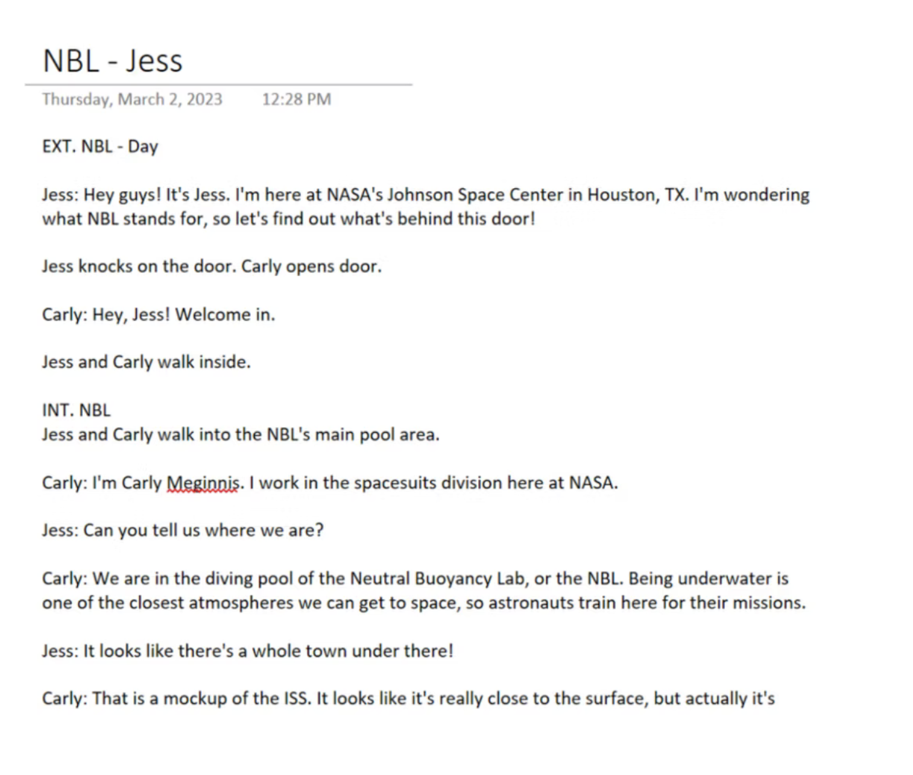
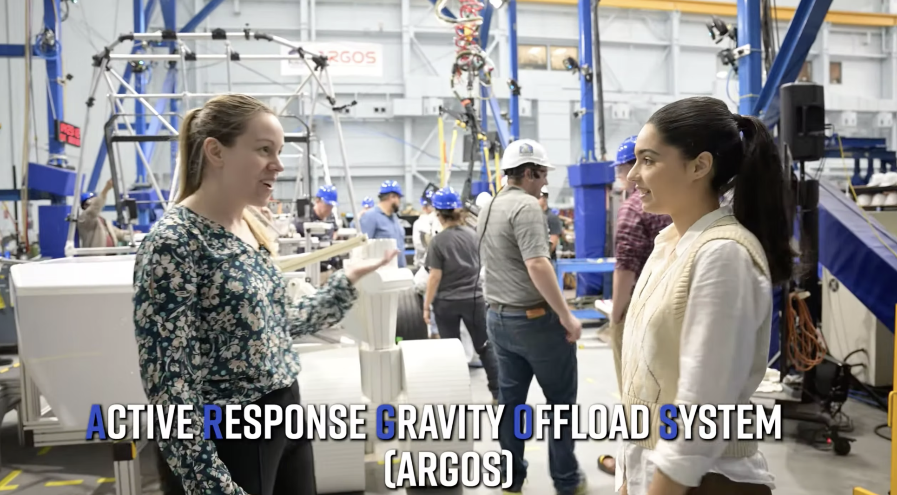
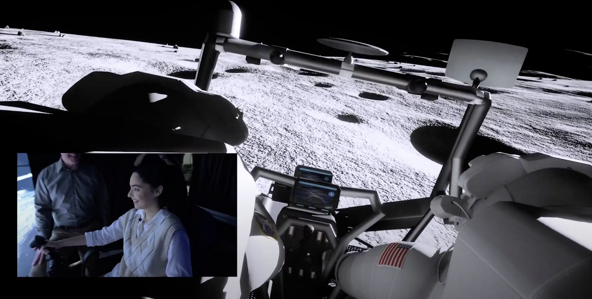

Watch the First Episode

— Video & Audio / Documentary Series
I saw a need for more short-form educational videos, so I pitched this series as an intern. I wanted to highlight some of the different departments that work together for the Artemis missions in a format that would attract younger viewers.
— About the Project
A host would walk through a different door each episode and ask an expert questions on what they do. Each episode would be 2-3 minutes for Instagram reels and appeal to the younger generations who may not know much about what NASA does.
— How It Was Made
I researched at social media trends and made a list of places that I thought would be most popular to feature. Once my boss chose which two locations to start off with, I conducted research on each department and wrote opening scripts and interview questions for each episode before filming.
On set, I was a production assistant. We conducted interviews with field experts and captured b-roll.
I edited the footage using Adobe Premiere Pro and After Effects. I gathered feedback from my team and made some changes before the final draft was posted.
— Full Series
— Outcomes
The first two episodes of the series were originally posted on social media only. After completing my internship, the series continued and has expanded to posting on YouTube. These more recent episodes have gained about 5k views.
— Behind the Scenes


